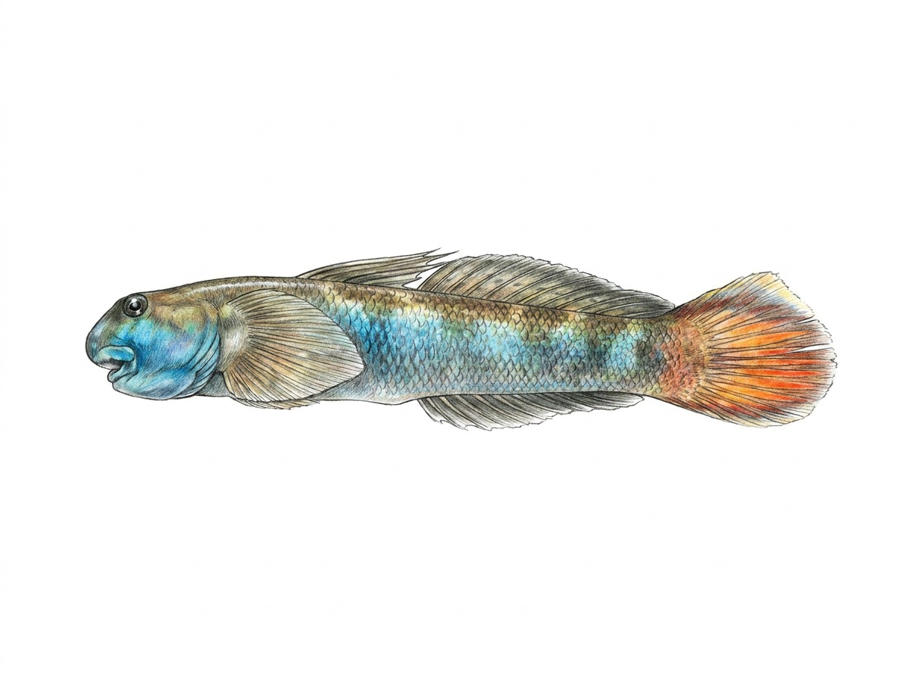

Red-tailed Goby
Sicyopterus halei
Family: Gobiidae
The Red-tailed Goby (Sicyopterus halei), known locally as ගල් වැලිගොව්වා (Gal Weligovwa), is an endemic freshwater goby species found in Sri Lanka belonging to the Gobiidae family. True to its family traits, it features two separate dorsal fins and strong fused pelvic fins that form a specialized pelvic sucker disc, allowing it to navigate and anchor onto smooth boulders in fast-flowing river currents. It is most easily recognized by the vibrant reddish or orange hue on its caudal (tail) fin, which contrasts with its dark grayish-brown body pattern designed for camouflage against rocky riverbeds. Inhabiting pristine, well-oxygenated hill country streams, this bottom-dwelling fish uses its specialized mouth structures to scrape algae and diatoms off rocks.